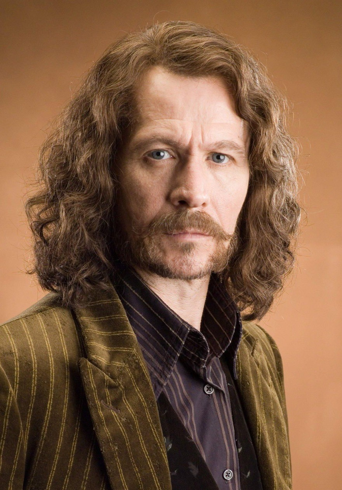
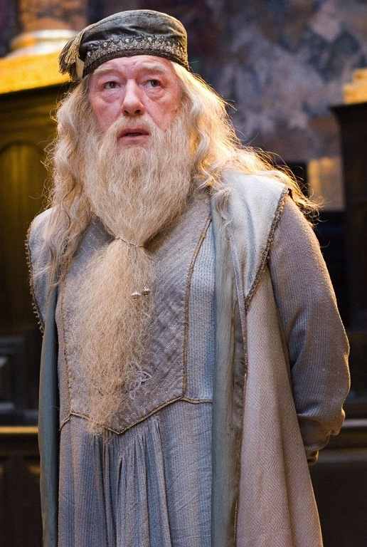

You are Harry. Brave, Quick Thinking, Witty, Honourable, Self-Reliant, Confident, Instinctive and extremely stubborn/strong willed/determined. Harry is often at the front line and will protect who he loves. He fights for the good of the wizarding world and is determined to kill the man who killed his parents. His quick thinking has often gotten him into many compromising situations but is willing to fight for what he believes in.
You are Harry. Brave, Quick Thinking, Witty, Honourable, Self-Reliant, Confident, Instinctive and extremely stubborn/strong willed/determined. Harry is often at the front line and will protect who he loves. He fights for the good of the wizarding world and is determined to kill the man who killed his parents. His quick thinking has often gotten him into many compromising situations but is willing to fight for what he believes in.
 You are Ron. Loyal, Passionate, Brave, Family-Orientated, Insecure, Funny, Shy, Stubborn and Strategist. Ron is Harry's most loyal friend and wingman. He considers Harry a brother and will stick by him always. He is very protective over his family and fights to do the right thing. He is supportive and is willing to give up his life for the greater good.
You are Ron. Loyal, Passionate, Brave, Family-Orientated, Insecure, Funny, Shy, Stubborn and Strategist. Ron is Harry's most loyal friend and wingman. He considers Harry a brother and will stick by him always. He is very protective over his family and fights to do the right thing. He is supportive and is willing to give up his life for the greater good.
 You are Hermione. Opinionated, Leader, Intelligent, Confident, No Nonsense, Mediator, Organised, Committed, Blunt and Brave. Without Hermione, Harry would have never defeated Voldemort as her intellect and quick thinking often saved both Ron and Harry from dying. She was an excellent problem solver and had great logic which is shown anytime she deciphers a riddle or clue. She cares deeply for her friends and would do anything to protect them.
You are Hermione. Opinionated, Leader, Intelligent, Confident, No Nonsense, Mediator, Organised, Committed, Blunt and Brave. Without Hermione, Harry would have never defeated Voldemort as her intellect and quick thinking often saved both Ron and Harry from dying. She was an excellent problem solver and had great logic which is shown anytime she deciphers a riddle or clue. She cares deeply for her friends and would do anything to protect them.
You are Sirius.Definitely brave and bold, with a thirst for adventure. He's a Gryffindor, after all. He's also a loyal friend (his animagus is a dog for a reason), and he doesn't like to feel useless -- which is why he is so insulted in Order of the Phoenix when Snape taunts him for staying hidden in Grimmauld Place. He has shown to be resourceful, especially in escaping Azkaban. The place makes people go mad, yet Sirius was able to think straight and get out.
You are Dumbledore.The Wise One radiates goodness.ost of the time Dumbledore was described in the books as a calm, kindly, caring, and humorous old man. He was said to be the only wizard Lord Voldemort ever feared, but it was hard for Harry to understand why this was until Harry finally saw Dumbledore in anger. When angered, Dumbledore transformed into a terrifying man filled with cold fury so intense he seemed to give off heat.